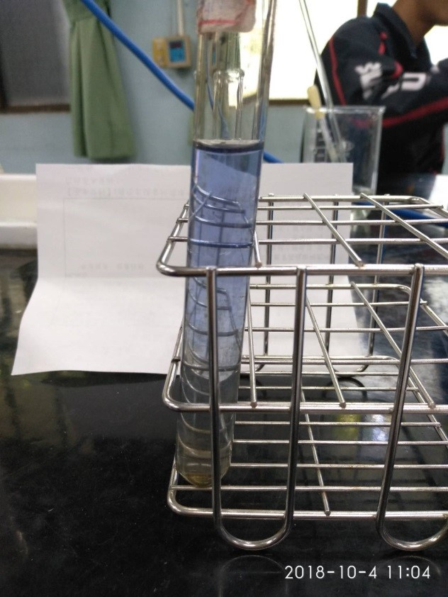
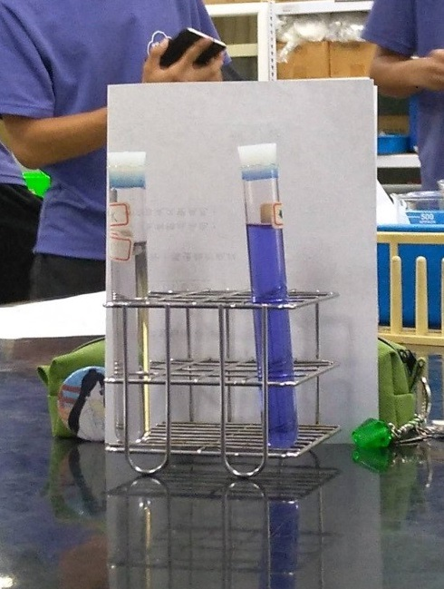

藍瓶實驗
實驗器材:
1.氫氧化鈉若干克 2.葡萄糖若干克
3.試管幾支 4.亞甲藍液
5.燒杯 6.滴管
實驗步驟:
1.氫氧化鈉及葡萄糖和水放入燒杯或其他容器中，持續搖晃瓶身至所有固體溶解。
2.再加入亞甲藍液，並靜置數分鐘，將會發現顏色會由藍色變為無色。
實驗數據:
|
氫氧化鈉(g) |
葡萄糖(g) |
水(ml) |
| 實驗組 |
2.5 |
2.5 |
150 |
| 對照組 |
2.5 |
0.1 |
150 |
|
40滴 |
70滴 |
100滴 |
| 實驗組時間 |
約27秒 |
約52.7秒 |
約66秒 |
| 對照組時間 |
約46秒 |
約108秒 |
約137秒 |
| 相差時間 |
約19秒 |
約55.3秒 |
約71秒 |
實驗心得及發現:
原理為將葡萄糖當作還原劑，氧化劑則為空氣中的氧氣，且因為反應會消耗試管內的氧，因此每次測時間時
都要先將瓶口打開，使瓶內空氣一致，且我們也發現亞甲藍液加的量越多，由藍色變為無色的時間會更久。在做
實驗時有許多控制變因，如氫氧化鈉的量、亞甲藍液的滴數、水含量、內含氧量……等。若是其中有一項忽略了，
那實驗就會有很大的不同。 實驗中也還有許多小細節要注意，例如在使用電子秤時，如果周圍風太大，就會影響
到所秤得的數據，導致間接影響實驗結果。透過了這次實驗，讓我學習到了做實驗不只是僅僅按照課本或講義
所給的進行操作，還要另外根據當時周遭環境逕行適當改變。
圖片:

